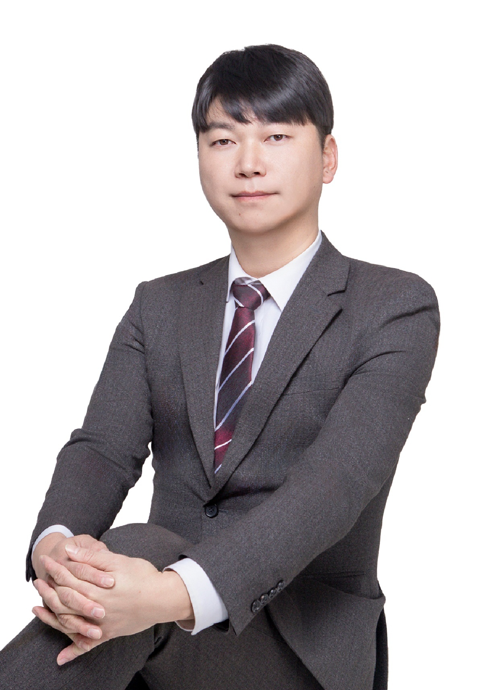

정책자금 전문 컨설팅, KY 중소기업지원센터

안녕하십니까, KY 중소기업지원센터 대표 최승균입니다.
정책자금 확보는 전문가와의 협업이 핵심입니다.
저희는 중소기업 맞춤형 컨설팅을 통해 대표님의 사업 상황을 면밀히 분석하고
최적의 정책자금 조달 방안을 제시합니다.
복잡한 정책자금 절차와 서류 준비에서
어려움을 겪고 계신 대표님들께
전문적이고 체계적인 지원을 약속드립니다.
귀사의 성장이 저희의 보람입니다.